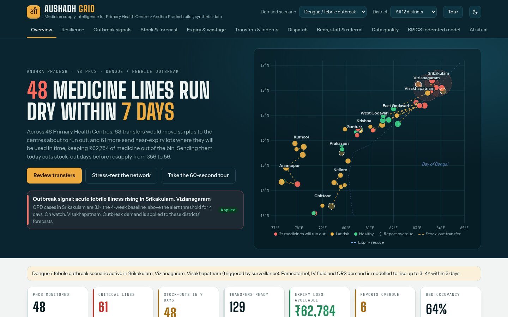
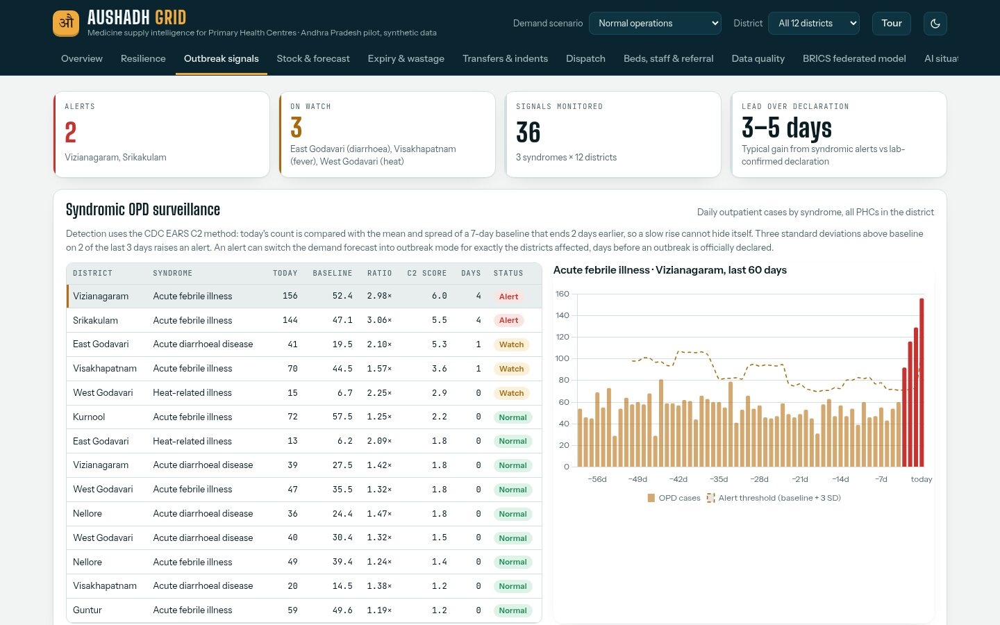
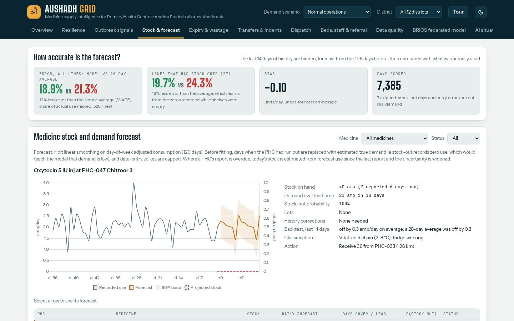
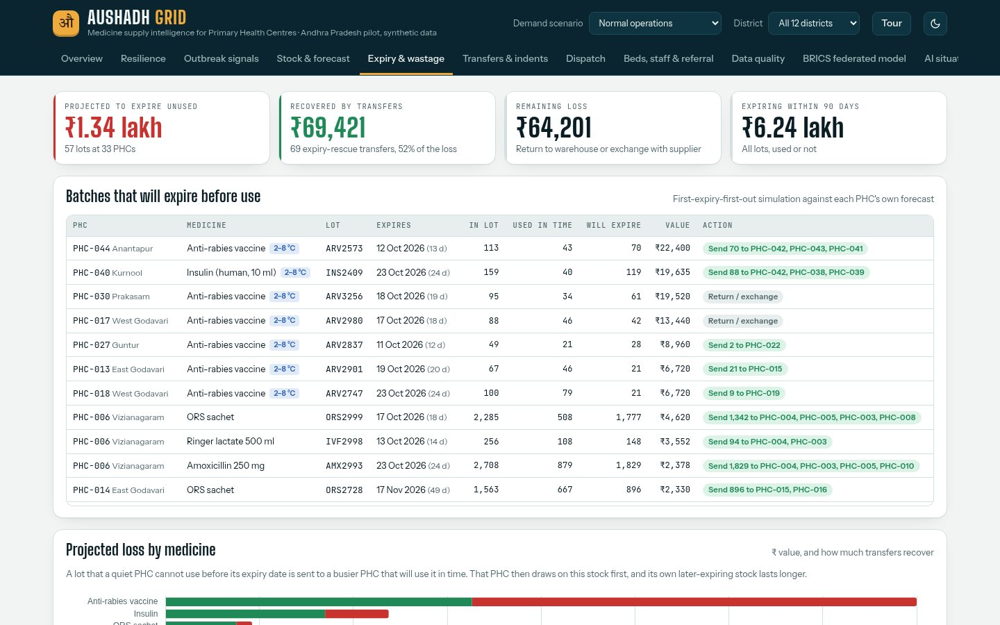
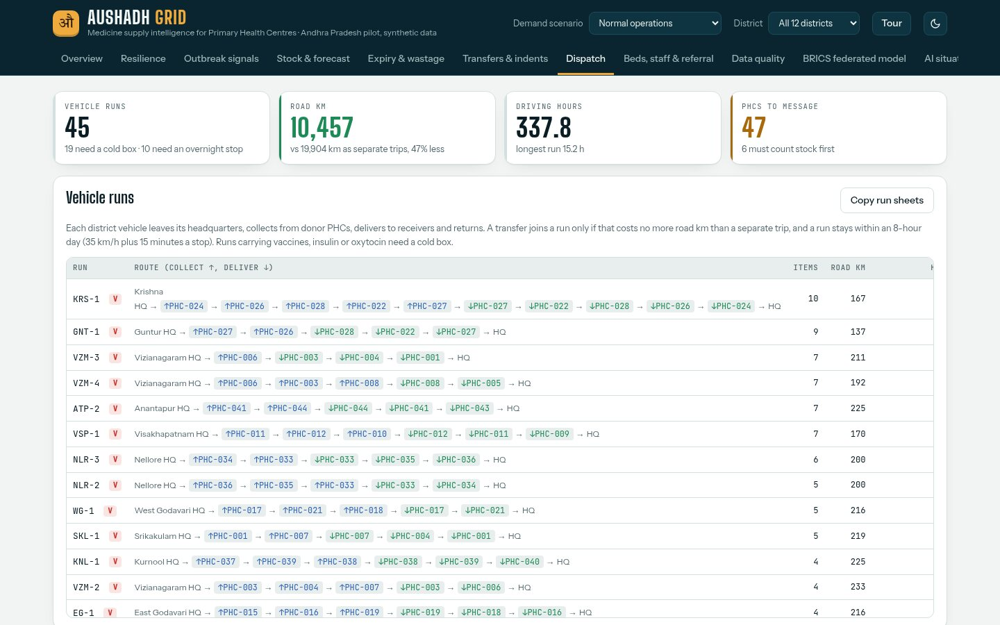
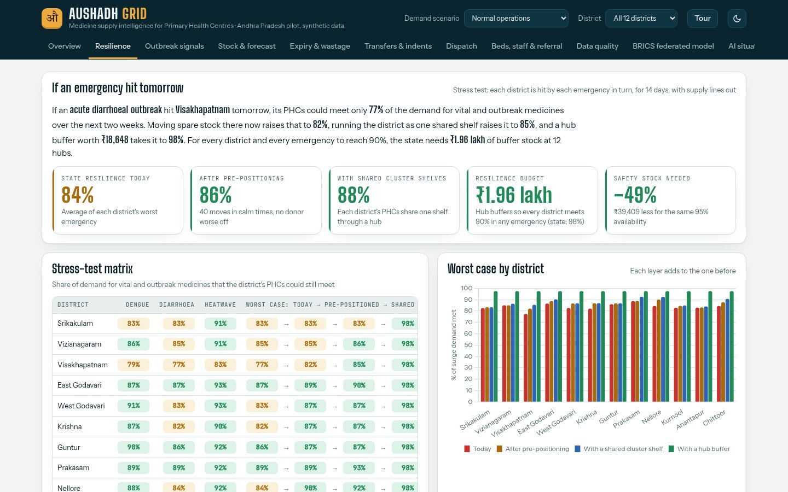
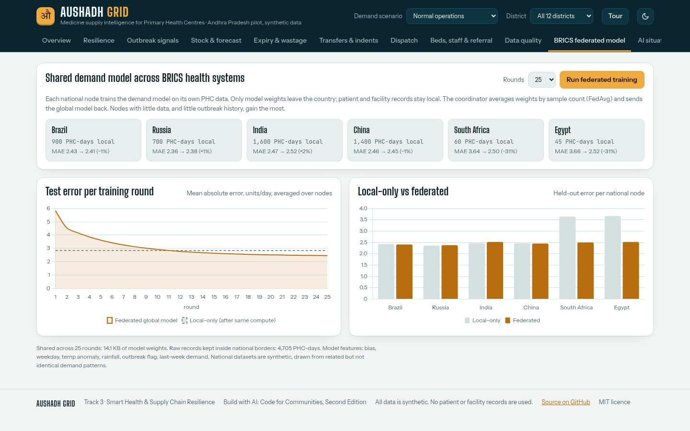
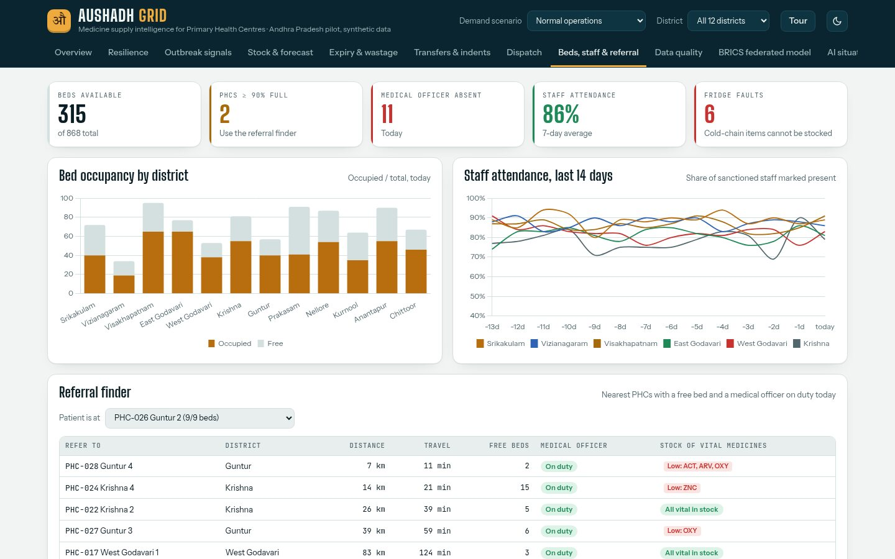
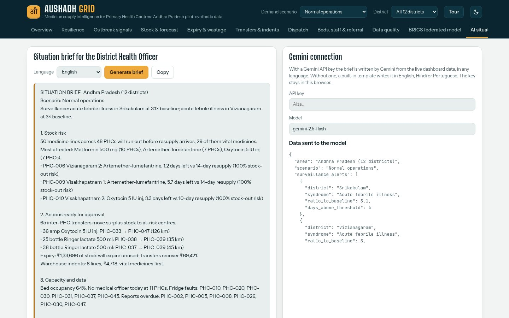

Federated AI for PHC medicine supply chains. It stress-tests every district against the next outbreak and prepares it in calm times, spots outbreaks early, and moves stock between centres before anyone runs out or throws medicine away.


Daily fever, diarrhoea and heat-illness OPD counts per district are checked with the CDC EARS C2 method. The baseline is 7 days ending 2 days back, and an alert needs 3 SD above it on 2 of the last 3 days.
One click applies outbreak demand to those three districts. Critical medicine lines rise from 50 to 61, and transfers are re-planned at once.





Each national node trains on its own PHC records. A coordinator averages the weights (FedAvg) and returns a global model.
| Node | Local data | Error change |
|---|---|---|
| South Africa | 60 PHC-days | −31% |
| Egypt | 45 PHC-days | −31% |
| India, China, Brazil, Russia | 700–1,600 | within ±2% |
Small systems that have rarely seen an outbreak learn outbreak demand from their partners. 14 KB of weights are shared and 0 raw records move.


Impact: fewer patients turned away, less medicine thrown away, outbreak stock in place days earlier, and a shared model that makes every partner's forecasts better.